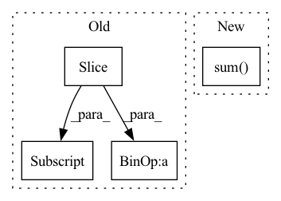

Pattern ID :8378

Before Change
sum_loss = 0.0
num_pred = 0
for logits, idx in zip(roll_logits, roll_idx):
roll_targets = targets[..., idx : idx + H]
ce = F.cross_entropy(logits, roll_targets, reduction="sum")
sum_loss = sum_loss + ce
num_pred = num_pred + roll_targets.numel()
return sum_loss / num_pred
After Change
logits = roll_logits.reshape(R * B, Q, H) // (R*B,Q,H)
targets = targets.unfold(-1, H, 1).permute(1, 0, 2) // (W,B,H)
targets = targets[roll_idx].reshape(R * B, H) // (R*B,H)
return torch.sum(logits.argmax(1) == targets) / targets.numel()
In pattern: SUPERPATTERN
Frequency: 3
Non-data size: 4
Instances
Fragment ID: 29264798
Project Name: cheind/autoregressive
Commit Name: bd8f0e0dfd5d3fa7abf07c9b48bc4b58604e79f9
Time: 2021-11-16
Author: cheind@profactor.at
File Name: autoregressive/metrics.py
M Class Name: AnonimousClass
N Class Name: AnonimousClass
M Method Name: rolling_origin_accuracy(3)
N Method Name: rolling_origin_accuracy(3)
M Parent Class:
N Parent Class:
M File Name: autoregressive/metrics.py
N File Name: autoregressive/metrics.py
M Start Line: 84
M End Line: 92
N Start Line: 89
N End Line: 93
'>
Before Change
input_tokens = tokenizer.tokenize(source)[:max_source_length]
// 2. tokenize output tokens
output_tokens = tokenizer.tokenize(target)[:max_target_length]
// 3. concat the inputs
tokens = input_tokens + output_tokens
labels = [tokenizer.pad_token_id] * len(input_tokens) + tokenizer.convert_tokens_to_ids(output_tokens)
After Change
max_length=max_target_length,
truncation=True,
)
target_input_ids_len = (np.array(target_tokenized["input_ids"]) != tokenizer.pad_token_id).sum()
source_tokenized = tokenizer(
source,
max_length=(max_source_length + max_target_length - target_input_ids_len),
'>
Fragment ID: 29264813
Project Name: paddlepaddle/paddlenlp
Commit Name: 0d1cba43ca0eb4984715f3c807fde7345e80ca40
Time: 2023-04-06
Author: fangzeyang0904@hotmail.com
File Name: examples/language_model/bloom/finetune_generation.py
M Class Name: AnonimousClass
N Class Name: AnonimousClass
M Method Name: convert_example(6)
N Method Name: convert_example(6)
M Parent Class:
N Parent Class:
M File Name: examples/language_model/bloom/finetune_generation.py
N File Name: examples/language_model/bloom/finetune_generation.py
M Start Line: 68
M End Line: 105
N Start Line: 73
N End Line: 114
'>
Before Change
factors_updown = factors[:,:nup,nup:]
// electron pairs up up
factors_upup = factors_[:,:nup,:nup]
factors_upup = factors_upup[:,torch.tril(torch.ones(nup,nup))==0]
// electron pairs down,down
factors_downdown = factors_[:,nup:,nup:]
factors_downdown = factors_downdown[:,torch.tril(torch.ones(ndown,ndown))==0]
return factors_upup.prod(1) * factors_downdown.prod(1) * factors_updown.prod(2).prod(1)
class JastrowFunction(torch.autograd.Function):
@staticmethod
After Change
def forward(self,input):
factors = torch.exp(self.static_weight * input / (1.0 + self.weight * input))
//factors = factors[:,torch.tril(torch.ones(self.nelec,self.nelec))==0].prod(1)
factors = factors.sum(2).sum(1)
return factors.view(-1,1)
//return JastrowFunction.apply(input,self.weight,self.static_weight)
'>
Fragment ID: 29264794
Project Name: nlesc-jcer/qmctorch
Commit Name: 367e2652236e20fd44c930c0364147f2315f419c
Time: 2019-06-26
Author: nicolas.gm.renaud@gmail.com
File Name: pyCHAMP/wavefunction/wave_modules.py
M Class Name: TwoBodyJastrowFactor
N Class Name: TwoBodyJastrowFactor
M Method Name: forward(2)
N Method Name: forward(2)
M Parent Class: nn.Module
N Parent Class: nn.Module
M File Name: pyCHAMP/wavefunction/wave_modules.py
N File Name: pyCHAMP/wavefunction/wave_modules.py
M Start Line: 97
M End Line: 110
N Start Line: 78
N End Line: 81